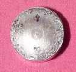
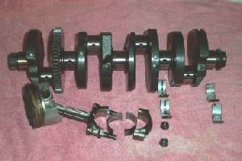

Fine grey haze in old oil is normal wear. Visible flakes, slivers, chips, a furry coat on the drain magnet, or bronze and aluminium glitter are not. They show that something inside is wearing fast or breaking: bearings, gears, the cam chain on overhead cam engines, the piston, the oil pump or clutch parts. Metal also circulates through the oil pump and can damage more parts. Many commuter engines trap some of it in a centrifugal filter on the crankshaft and a mesh strainer at the drain.
Is it safe to ride?
Do not ride until the source is understood, except very gently to a workshop if there is no noise and only a small amount.
Quick checks first
- Was the engine new or just rebuilt? A little bright metal in the first oil change is common.
- Is there any noise: knock, rumble, rattle or whine?
- Is the metal magnetic (steel) or not (aluminium, bronze)?
- How big are the pieces: dust, flakes, or chips you can pick up?
Diagnose it step by step
1Collect and look at the debris with Inspect drained oil for clues. Is it only fine grey paste?
- Yes: likely normal wear, especially on a new or just rebuilt engine. Change the oil and clean the strainer with Change the engine oil and clean the strainer, then check again after a short distance.
- No, there are flakes or chips: go to step 2.
2Is the engine making a new noise?
- Deep knock: go to Deep knocking from the bottom of the engine.
- Rumble: go to Rumbling or growling from inside the engine.
- Rattle at the cylinder (OHC engine): go to Rattling noise from the cam chain area.
- Whine in gear: go to Whining noise in one or more gears.
- No noise: go to step 3.
3Is the debris mostly steel (sticks to a magnet)?
- Yes: gears, bearings, cam chain or starter gears. Go to step 5.
- No: go to step 4.
4Is it aluminium (silver, soft) or bronze (gold coloured)?
- Aluminium: possible piston scuffing or a part rubbing on a case. Go to Assess the top end (cylinder, piston, valves).
- Bronze: bushes or thrust washers. Go to step 5.
- Brown fibre with fine grit: clutch material. Check Clutch slips: revs rise but the bike does not pull.
5. Workshop: Assess bottom end and internal engine damage. Bring the strainer, the drain plug and a sample. The workshop will also clean the centrifugal filter and oil passages so metal does not spread.
What happens if you keep riding: metal pieces pass through the pump and bearings, so one worn part becomes many.
Causes, most likely first
| Cause | How to confirm | Fix |
|---|---|---|
| Normal running-in wear | Fine paste, new engine | Change the engine oil and clean the strainer |
| Worn bearing or gear | Steel flakes, noise | Assess bottom end and internal engine damage |
| Cam chain or tensioner (OHC) | Steel plus plastic, rattle | Check the cam chain and tensioner |
| Piston scuffing | Aluminium, low compression | Assess the top end (cylinder, piston, valves) |
| Clutch wear | Fibre, slipping | Inspect and replace clutch plates and springs |
| Bottom end bearing debris (two-stroke) | Piston crown looks chewed, needle bearing pieces in the crankcase | Rebuild the bottom end. A new piston alone will be ruined |